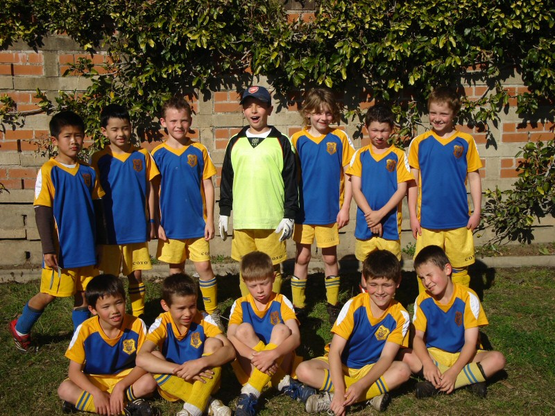

| Match Report - 09 August 2008 |
|
|
|
|
|
|
|
| U7 - Green |
North Ryde Koalas - Mums and Dads United

|
|
|
|
News about how our guys were planning to finish the season off with a bang
had obviously filtered through to the Gladesville Sharks B team, so they
thought it best to not turn up and face the music.
A 'friendly' was organised against the parents and needless to say that
after they thought a valuable lesson had been learnt about how to lose
graciously, the kids finally decided that the parents had been humiliated
enough!
The curtain has finally come down on a fantastic season for the U7 Green
Koalas team where the onus has always been about having fun. Every player
in the team has benefited from this season in terms of their development
and even their attitude on the field, which leads me to thanking some
people who really deserve to take the accolades.
I would like to start by thanking our coach Garry, who has done a terrific
job with the team this year. How do you measure a good coach in Under 7's
soccer? Well, if you played for Ryde Saints United, you would simply say
they won all their games and won well, but thankfully we don't so the simple
answer is that every player in our side walked off the field every Saturday
feeling that they had played a good game and had fun. Gary encouraged every
player equally and they all responded to him. I'm sure they all want you
back next year Garry. Thanks for a great season.
To our team managers Lisa and David, thank you for all your help and
organisation, particularly Lisa who can't help herself and takes on too
much! Even with other commitments these guys were always willing to help
out where and when they could which made life easy for the rest of us.
A special mention to the parents (and grandparents) of all the players.
If there was an award for the most well behaved and supportive group of
parents/supporters, this lot would win hands down! From my perspective
where I paid a fair bit of attention to coaching and support staff from
the opposition teams, we could write a manual on how to behave at a junior
soccer match using our group as role models. You should all take a bow.
Not to mention the half time 'oranges' throughout the season. Guys, I think
we have built a rod for our own backs with the quality and assortment of
fruit... next year it's strawberries, blueberries and watermelon only!
From my part, it has been a pleasure to write up match reports each week
and thanks to all of you for your feedback throughout the season. I'll
have to come up with some new material for next year. Until then, bye
for now.

- Paul Bonaventura
|
|
|
|
|
|
The Blues played their final game of the season against Epping Eastwood
this morning without three of their key players, Eli, Shannon and Jack,
the rugby lads who were obliged to attend their league finals that were
unfortunately being held on the same day. The team missed the rugby-like
edge that these three usually throw into the game and the manner in which
they strike fear into the opposition with penetrating attacks and fearless
tackles.
The team however is very grateful to Maggie, Ben and Luke of the U8 Orange
team who made the effort to get to Boronia Park on time after their own game
and fill in for the missing players. All three tried very hard when they were
on the field and gave a good account of themselves in the face of a relatively
polished opposition. Much appreciated guys
The Blues eventually lost the match by 2 goals to nil but not without a
dogged fight to the very end. Carrying on in the same vein where they left
off last week, the team continues to impress with their situation awareness
on the field and ability to improvise and create an attacking movement
within the space of a few seconds. In the first half they relied on their
usual rock-solid defence to keep the opposition at bay but still managed
an occasional breakaway blitz and shot on goal to remind their rivals that
they were still in business. Epping Eastwood's first goal came from a
long-range goal kick that was picked up deep in the Blues half and put away
quite easily courtesy of the disabled offside rule. Their second was more
impressive as the striker fired the ball into the net from a very acute
angle to the goalposts. It was a terrific goal and well done to them.
Down by 2 goals at the break, the Blues came out in the second half with
a strong resolve and fiery determination to try and reduce the deficit.
This did not happen, but they certainly had a good crack at it and, like in
so many of their previous encounters, they used their fitness and agility
to dominate both possession and territory for most of the second half. Their
handling and passing of the ball was superb and they were a little unlucky
not to be rewarded with a goal for their efforts. Neither side was able to
convert in the second half and the score remained 2 - 0 at the final whistle.
And so ends what can only be considered a very successful season for this
energised bunch of young guns. Their season statistics give a rather clear
indication that they weren't on the field just to look good. Of the 12 games
they played, they won 8, drew 2, and lost 2 including today's match, and just
15 goals were scored in response to their 42 which must have entitled them to
a relatively decent place in the association's U8 Blue division standings.
But statistics aside, the success the Blues enjoyed this year came from each
player's simple desire to compete and do well when the stage lights are
turned on. They wanted to play soccer, they wanted to perform, and they
wanted to win. The will to succeed was already there, and Tony might agree
that the coaching task was more about channeling the raw energy in the right
direction rather than trying to manufacture it in any way. No amount of
shouting or instruction from the sideline would have made any difference
to the way in which the Blues went about their game, which might also account
for the - dare I say it - exemplary behaviour of the parents on match days
With their positive attitude, I'm convinced that each of these Blues players
will go on to be successful in whatever they choose to do, football or
otherwise, and it has been a privilege to share in the talent and passion
that we witnessed every time they donned their blue and gold shirts and took
to the field with that winning look on their faces.
Go Blues!
- Mark Howard
|
|
|
|
|
|
Last training and last game! It was a tight game with the score leveled at 0-0 at
half time. For the first time Rhea played as goalkeeper. She managed to prevent
the other team from scoring any goals. Well done Rhea. You never say you can't do it!
The game was very even. There were two monster players in the WRR team that
could kick hard.
Luckily, Thomas's sharp tackles saved a lot of goal scoring opportunities.
What a defender!
Matthew also made good coverage on the field. There were a lot good kicks
from Sam and Kyran too, and Sam nearly scored a goal for us.
Ryan and
Andrhea contributed with some excellent passing shots to their team mates.
The parents had a bit of fun watching Jerry playing with one shoe on during
the middle of the game. I missed the chance to take a photo of him.
As usual, Oscar, Sam and Rhea tried hard to score a goal for the Green team.
Little Peter kept tackling the big guys.
Liam did a great job as goal keeper in the second half and the team in
general put a great effort into the game.
Congratulations to all the players for this week. They all received a medal
from me and you can see how happy they are!
We all enjoyed our soccer this season and hope to see everyone back again
next year.
Thanks a lot to our coaches, Allan and Scott, for all their hard work in
training the players and managing the delegation and substitutions every week.
- Mandy Van (Team Manager)
|
|
|
|
|
|
The U8 Oranges were up at dawn for their 8:30 game, but the Gladesville
Sharks didn't show up! So we're going to assume we won this one on a
forfeit

The team ended up playing a 5-on-5 fun game with two balls, followed by
end of season presentations for players and coaches with some fun prizes
and certificates designed for all the players - encouraging them for next
year.
Three of the players, Maggie, Ben and Luke then hot-footed it to Boronia
Park to fill in for some missing players in the U8 Blues team, so at
least some of them had a game!
- Andrew Curdie (Coach)
|
|
|
|
|
|
|

|
|
|
|
|
|
A magnificent, warm, wintery day was the setting in leafy Epping.
The defence was tight early and the nerves were showing. Hayden cleared the
ball, Cam and Luke chased but the goalkeeper for NER got to it first. This
was the first of many successful saves by the goalkeeper, who was kept very
busy!
Kyle crossed a gorgeous ball to centre and Ben had a shot at goals. Saved
again... bummer! The crowd was loud, the cheers of support were deafening.
Gillian was sorting out the feng shui.
Tom was relentless in his chases for the ball. It was 10 minutes into the
first half before Lachlan had his first touch of the ball in goals. Great
save Lachlan!
Luke broke free and showcased his amazing speed to make a charge at the
goals, unfortunately the ball got a little ahead of him and the keeper
snatched it up.
Opportunity knocks! A direct free kick to us (due to a hand ball from NER),
Cameron ripped it a beauty but the goalkeeper had his eye in and it was saved.
Zac gained a free penalty kick and Cameron had a set piece kick at goal,
saved again by the goalkeeper. That goalkeeper is working overtime right
about now!
Ben had an attempt at goal, hard luck - saved again! Tom took a corner with
his left foot, bent it beautifully, as it shaved the front of the goalposts
we roared and begged for one of those under 12 Nitros heads to pop it in...
Alas it was not to be!
Another free kick, great try by Cameron but it was just to the right. Most
of the first half was played in attack - we were relentless in pursuing the
goal posts.
Half time - no score yet! The half time talk was... 'don't hold back, attack,
control and patience... keep the shots at goal coming because one is going
to go in'
Back on we go and Cameron lopped one into the goal, you beauty... The
opposition were taken by surprise! (Gillian clearly has the feng shui
sorted)
This was followed by an anxious moment in our goal, Chris' boot and certain
consistency ensures our safety. Lachlan cleaned up an attempt at our lead.
Nathan, Lewis, Kyle, James and Aman were working tirelessly throughout the
match. Some great plays down the sideline and a knack of being in the right
place at the right time.
Zac flicks to Tom off a throw-in, Tom crosses to centre, Elia lines it up and
YEE-HAA goal number two is in the back of the net.
A flurry of attack follows, a hand-ball by us gives NER a penalty kick at
goal and they score. It's now 2-1 to NRS with 10 minutes to go. Nail biting
stuff! With 30 seconds to go we have one more attempt.
What a wonderful sound the full time whistle... We are through to the
Grand Final!

Well done boys - you're great! Look out West Wyde Rovers next week!
- Cindy Berghofer
|
|
|
| All Age - Division 13 |
|
Wed 6 August: North Ryde 1 - Gladesville Sharks 3

Sadly this is my last report for 2008; I have really enjoyed the clashes
the boys have had on the field this year. Unfortunately a couple of the boys
finished the year on a low. Read on to find out more!
It was a cold windy night at the home of GHFA at Christie Park where the
postponed match between Nth Ryde A13 and Gladesville Sharks had been
rescheduled to. The boys looked ready to take on the skilful Sharks but
unfortunately there was no referee present to handle the encounter. Nth Ryde
were left with only one option, an ex-player of the Sharks would oversee the
first half as Ado had not turned up to play yet (apparently he was stuck on
a very important call - what could be more important than your team playing
Ado?). Just to fill you in, Ado is a very high level referee and we could
have done with his services in the first half!
Anyway, play got underway and the boys settled into a rhythm. They were
playing all over the Sharks in my opinion in the first ten minutes until
the fateful blow struck. Pierre had worked a ball nicely off a Sharks player
who didn't like that a bloke twice his age had managed to turn him around.
This lovely player then decided to retaliate and stuck his leg out at full
stretch to chop Pierre down in full flight. Pierre thought he was far enough
away from the Shark but unfortunately he wasn't. Pierre was collected nicely
and went flying through the air onto his arm. He stayed down and the sideline
was unsure what the outcome was. Smithy then came over to get a jacket and
told us Pierre thought he has dislocated his shoulder. Unfortunately though
for Pierre, when he tried to lift his arm there was no response. An ambulance
was called and Pierre was carted off to Ryde Hospital. He had a clean break
up high on his arm near his shoulder. He is now off work for at least two
weeks and the lovely Sharks player got to play on for the whole match as
the 'ref' had no cards to give out. This was obviously a bitter blow for Nth
Ryde as Pierre is their star striker and it was the semi-finals.
The crowd became very fired up with this indiscretion and got involved in
the game, so much so that the Sharks players at the end of the game commented
on how good our support was of our boys.
The first half went from bad to worse in the refereeing arena and the Sharks
ended up with a 2-0 lead at half time, with both goals being scored dubiously.
Bring on Ado! He was all show when he walked over to the crowd and took his
jacket off to reveal his referees outfit. We all went wild knowing that at
least the second half would be under control and allow our boys a fair go at
the win. Sure enough it was a perfect display of refereeing and the boys
managed to get a goal back off the Sharks. The game was finally in the
balance and the Sharks were frustrated at the skill level of our boys and
the crowd noise we were making. Unfortunately the Sharks hit back with a late
goal and won the match 3-1. If GHFA been able to provide an official referee
for the whole match I'm sure the scoreline may have been different. But c'est
la vie it was not meant to be. The boys now had to look towards their
Saturday clash against West Pennant Hills to force their way into the
grand final.
Nth Ryde 1 - Gladesville Sharks 3
- FF
|
|
Sat 9 August: North Ryde 1 - West Pennant Hills 1
Same week, same deal, another ambulance run for the Nth Ryde boys.
Well I won't talk too much about this game except to say that Nth Ryde was
having a pretty bad week. Geoff Smith had turned up and announced his
retirement today if the boys didn't make it into the grand final.
Unfortunately for Geoff he was to go out on a big low, midway through the
first half he was hit with a bad tackle that bought him down. He limped off
to the sideline but it didn't look good. The boys called the hotline to the
NSW ambulance service and they arrived, managed to get the ambulance bogged
in the mud at Magdala, had the support crew from the Nth Ryde AA13's side
push them out of the mud and then got to Smithy and carted him off to
hospital, only to find out that he had broken his tibia and would be off
work for a while.
What a sad ending for someone who has played for his club for over 20 years.
Farewell Smithy, we'll miss you. Best of luck to Pierre and Smithy for their
recovery, we hope it is speedy.
The boys drew this match 1-1 and unfortunately did not progress to the
finals.
Signing off for the last time in 2008.
- FF Frustrated Fanatic! aka Lhan
|